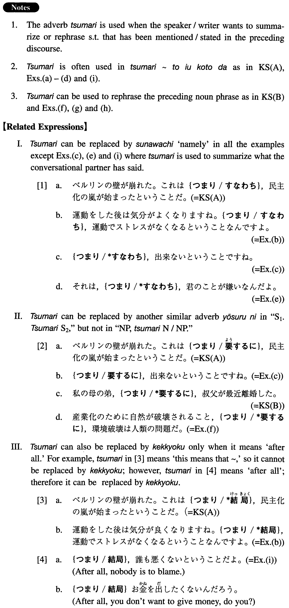

←
DoJG
→
つまり
(I. 538)
Example sentences
(ksa).
ベルリンの壁が崩れた。これは
つまり
、民主化の嵐が始まったということだ。
The Berlin Wall fell apart. This means that the storm of democratization has started.
(ksb).
私の母の弟、
つまり
、叔父が最近離婚した。
My mother's younger brother, that is to say, my uncle, has recently divorced.
(a).
アメリカに一年間一人で出張するんです。
つまり
、単身赴任ということですよ。
I'm going without my family to work for the company in America for one year. In other words, I'm becoming a tanshin-funin worker.
(b).
運動をした後は気分がよくなりますね。
つまり
、運動でストレスがなくなるということなんですよ。
You feel good after exercise, right? That means, stress is eliminated by exercise.
(c).
A：部長、このプロジェクトは出来ますか。B: そうだね。いいプロジェクトだと思うけど、予算がどうもねえ。A：
つまり
、出来ないということですね。
A: Chief, can we do this project? B: Well, I think it's a fine project, but you know how the budget is. A: In short, we cannot do it, right?
(d).
日本の父親は子供がまだ寝ている時に家を出て、子供達が寝てから家に帰って来る。
つまり
、父親不在ということだ。
Japanese fathers leave home while their children are still asleep and come home after they have gone to sleep. This is, in short, an absence of fathers.
(e).
A：彼女、僕が会いに行っても、あまり話してくれないんですよ。B: それは、
つまり
、君のことが嫌いなんだよ。
A: I go to see her, but she doesn't talk much to me, you know. B: That means, she doesn't like you.
(f).
産業化のために自然が破壊されること、
つまり
、環境破壊は人類の問題だ。
The destruction of nature by industrialization, that is to say, environmental destruction, is a problem of mankind.
(g).
私の母の妹の娘、
つまり
、私のいとこが来週バンコクから来ます。
The daughter of my mother's younger sister, my cousin, that is, is coming from Bangkok next week.
(h).
女性を女性だからといって差別すること、
つまり
、性差別の問題はどこへ行ってもある。
To discriminate against a woman simply because she is a woman, in short, sexual discrimination, exists no matter where you go.
(i).
つまり
、誰も悪くないということだ。
Nobody is to blame, after all.
Formation
(i)
Sentence 1 (Sentence2…)
つまり
Sentence Noun
金がない。
つまり
、貧乏なんです。
I don’t have money. In other words, I’m poor
(ii)
Noun Phrase
つまり
Noun/Noun Phrase
母の姉の子供、
つまり
、私のいとこ
The child of my mother’s older sister, my cousin, that is
